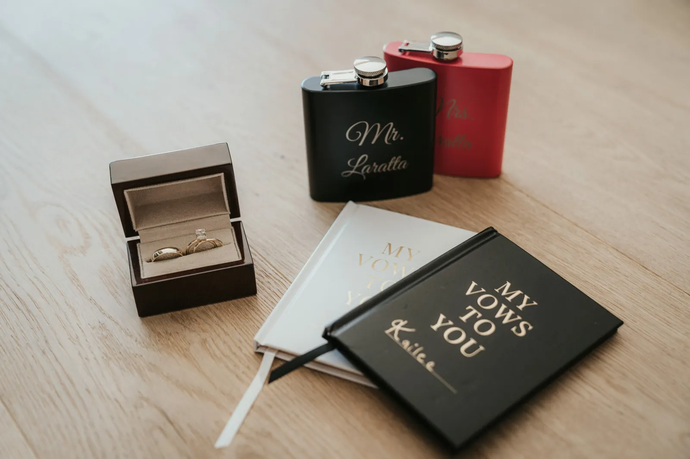
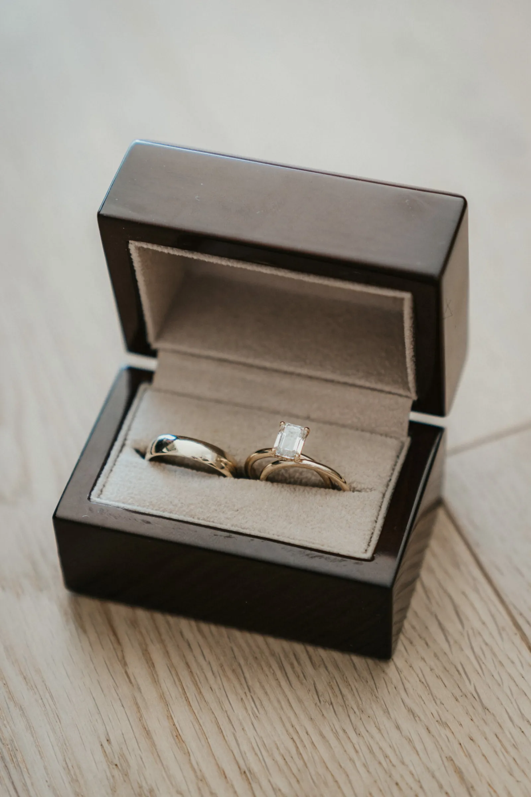
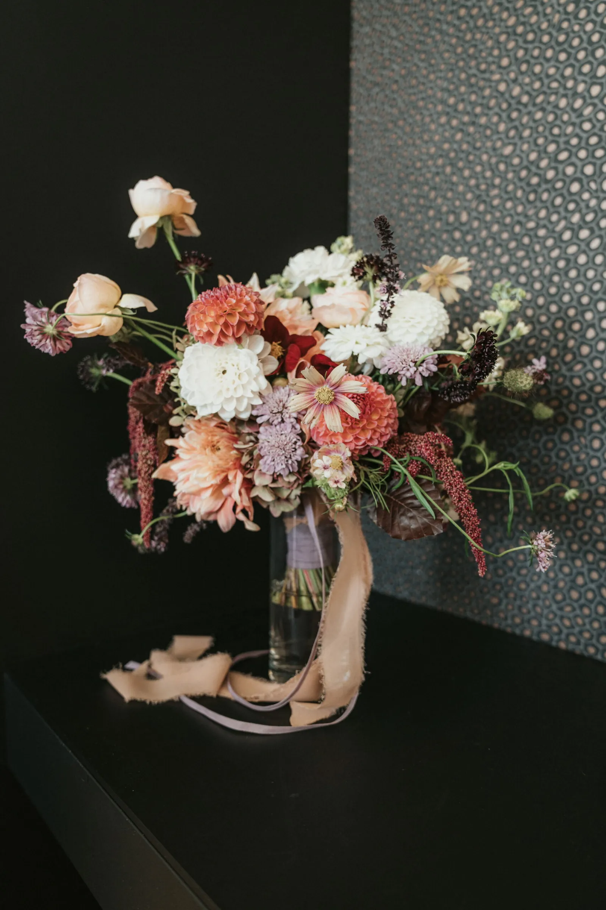
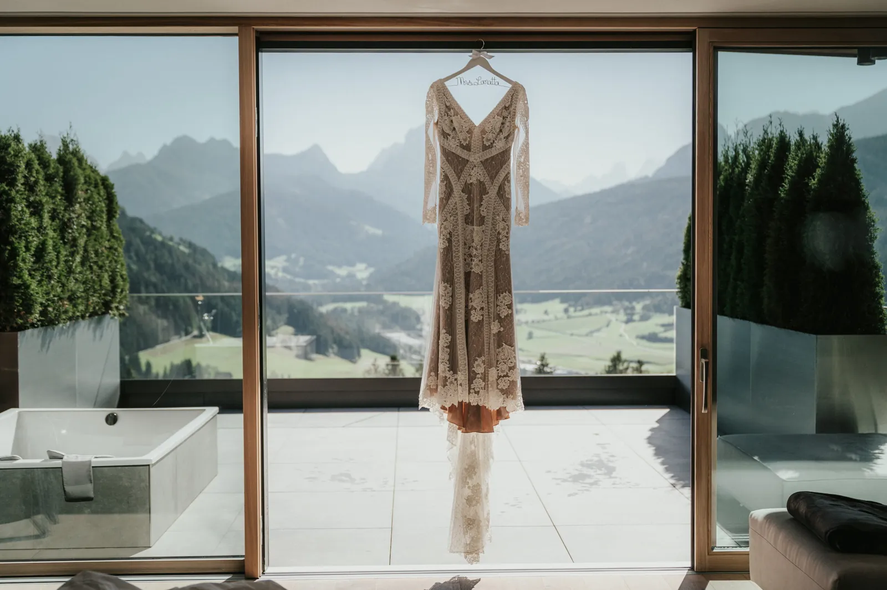
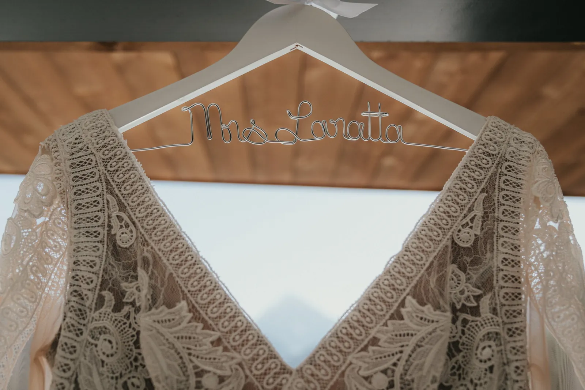
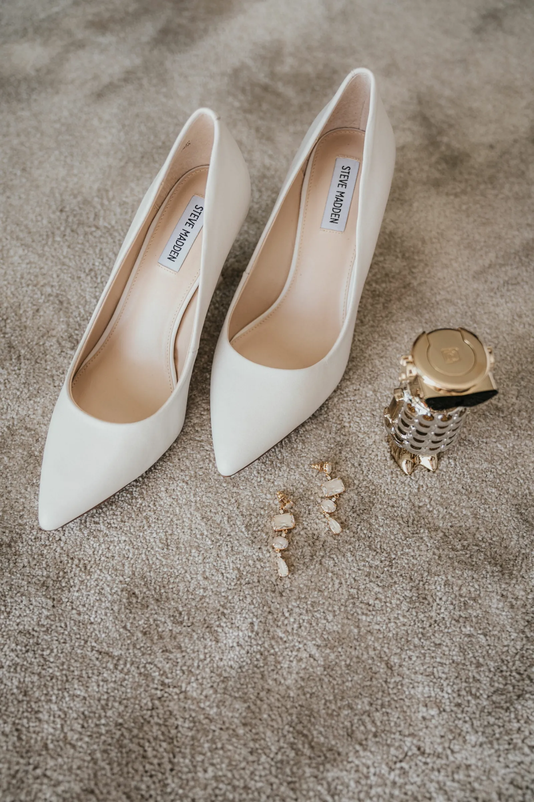
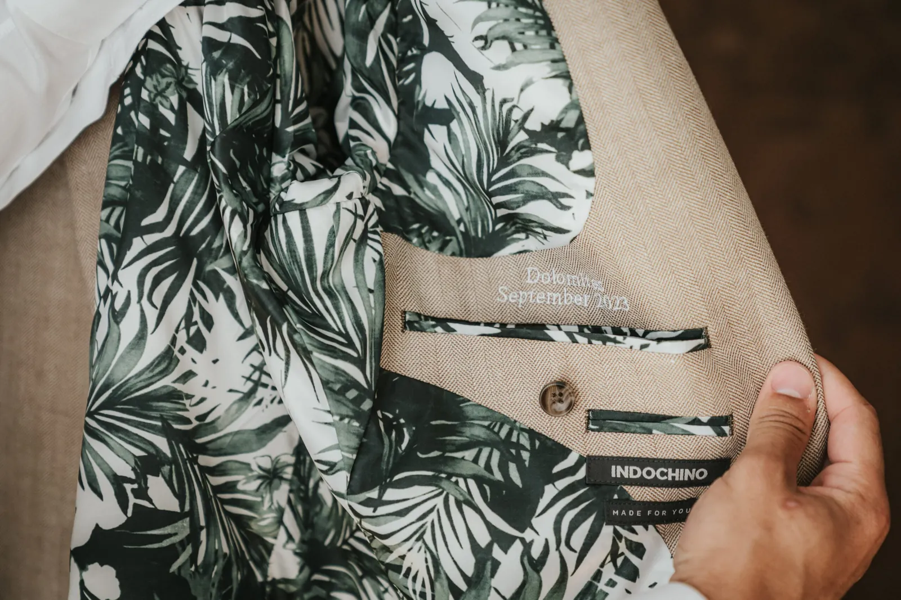

Le Dolomiti nella loro forma più classica — guglie chiare, valli profonde e una giornata costruita intorno a loro.
Le Dolomiti non somigliano ad altre montagne — torri di calcare chiaro che si tingono di rosa al tramonto e brillano d’azzurro freddo all’alba. Sposarsi qui significa unirsi dentro un paesaggio quasi inventato: frastagliato, immenso e vostro per un mattino.
Dai prati sul ciglio della strada agli alti passi, c’è un angolo dolomitico per ogni livello di fatica. Scegliamo il luogo in base a quanto volete camminare e quanto selvaggio lo volete.
Pianificazione Dolomites Wedding Planner · Film No Matter The Weather · Foto Blitzkneisser · Trucco Viki Aichner




Pietra che si fa rosa al crepuscolo, e una promessa sotto.



Comunque immaginiate la vostra giornata — un’alba silenziosa, una vetta, un lago tutto per voi — la pianifichiamo intorno a voi due e la fotografiamo com’è stata davvero.